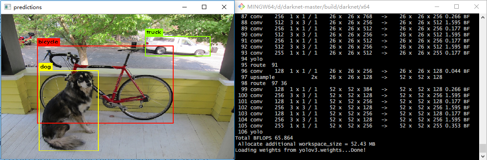
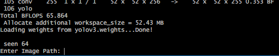
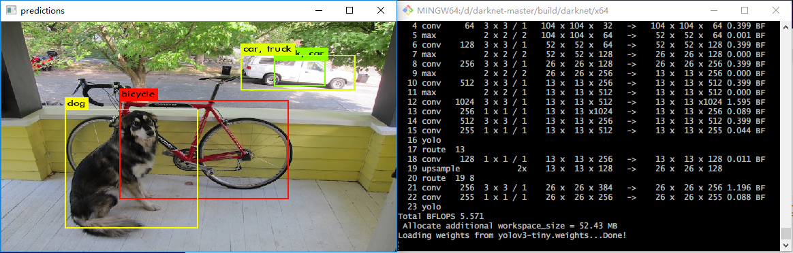

本文将介绍如何使用darknet框架下的yolo v3制作第一个属于自己的深度学习目标检测模型。
Why YOLO?
You only look once (YOLO)是顶尖的实时目标检测模型。
下面是YOLO与其他模型的性能对比。

可以看出YOLO 具有耗时较少，准确率不低的优点。
配置环境
建议环境：Win10、支持CUDA的Nvidia显卡、Python3、CUDA>=9.0、CUDNN>=7.0、VS2015、OPENCV<4.0
详细操作步骤参考：
Yolov3+windows10+VS2015部署安装
How to compile on Windows (legacy way)
编译时可能遇到形如compute_75的错误，解决方法：用文本的方式打开darknet.vcxproj文件，将所有的compute_75替换为compute_50，将所有的sm_75替换为sm_50，具体替换成什么，请参考Compatibility
YOLO初体验
基本用法
这一步我们尝试使用下刚刚编译好的YOLO。
由于可能缺少模型的权重文件，我们从这里下载YOLO-V3权重文件（236MB）
然后将目录切换到D:\darknet-master\build\darknet\x64，打开命令行，输入以下语句：
./darknet.exe detect cfg/yolov3.cfg yolov3.weights data/dog.jpg正常情况下会得到以下效果：

同时也会得到predictions.jpg保存在相同目录下。
运行一次模型需要：
- 配置文件（.cfg）
- 权重文件（.weights）
- 被测图片
同时尝试将上述语句最后的data/dog.jpg分别替换为data/eagle.jpg, data/dog.jpg, data/person.jpg, or data/horses.jpg，查看效果吧。
上述语句中的detect是一种缩写，上述语句也等同于
./darknet.exe detector test cfg/coco.data cfg/yolov3.cfg yolov3.weights data/dog.jpg当然也可以载入一次模型进行多次预测，输入以下指令（就是去掉图片选项）：
./darknet.exe detect cfg/yolov3.cfg yolov3.weights然后它会提示你输入图片路径：

输入路径后回车，按Ctrl+C退出输入状态。
除此之外，YOLO还提供设定阈值方法来剔除置信度过低的结果。例如若想显示所有结果则使用以下代码（此处阈值设置为0）：
./darknet.exe detect cfg/yolov3.cfg yolov3.weights data/dog.jpg -thresh 0默认的阈值是0.25。
Tiny YOLOv3
首先下载Tiny YOLOv3的权重文件（34MB），丢到与darknet.exe同级的目录下。
使用以下命令运行：
./darknet.exe detect cfg/yolov3-tiny.cfg yolov3-tiny.weights data/dog.jpg
可以看到tiny版本的精度略低，但是速度快。
使用摄像头或视频
使用以下命令在摄像头0（OPENCV默认使用摄像头0）运行Tiny YOLOv3
./darknet.exe detector demo cfg/coco.data cfg/yolov3-tiny.cfg yolov3-tiny.weights使用参数-c <num>指定使用哪一只摄像头。
或者使用以下命令实现Tiny YOLOv3对视频的目标检测：
./darknet detector demo cfg/coco.data cfg/yolov3.cfg yolov3.weights <video file>训练自己的YOLO
这里我们我们使用Pascal VOC2007数据集训练YOLOv3-tiny模型。
关于该数据集的介绍，可以查看这篇文章
具体步骤详情：
How to train (to detect your custom objects)
How to train tiny-yolo (to detect your custom objects)
数据准备
为了训练YOLO我们需要2007年的VOC数据集，可以从这里下载。下载完后解压，解压完训练数据都在VOCdevkit/文件夹下。
训练YOLO需要使用特别格式的标签数据文件，它是一个.txt文本文件。
这个.txt文件的每一行是一个标签，一个文件对应一张图片，它看起来像这样：<object-class> <x> <y> <width> <height>
注意此处的中心x、中心y、框width和框height是相对于图片宽度和高度的值，都是不大于1的小数。
转换公式：
$$x=\frac{x_{min}+(x_{max}-x_{min})/2}{W_{image}}$$
$$y=\frac{y_{min}+(y_{max}-y_{min})/2}{H_{image}}$$
$$w=\frac{x_{max}-x_{min}}{W_{image}}$$
$$h=\frac{y_{max}-y_{min}}{H_{image}}$$
为了得到这些.txt文件，我们可以方便地通过运行一个叫voc_label.py的脚本来生成。
脚本的内容如下：
import xml.etree.ElementTree as ET
import pickle
import os
from os import listdir, getcwd
from os.path import join
sets = [('2007', 'train'), ('2007', 'val'), ('2007', 'test')]
classes = [
"aeroplane", "bicycle", "bird", "boat", "bottle", "bus", "car", "cat",
"chair", "cow", "diningtable", "dog", "horse", "motorbike", "person",
"pottedplant", "sheep", "sofa", "train", "tvmonitor"
]
# 位置坐标转换
def convert(size, box):
dw = 1. / (size[0])
dh = 1. / (size[1])
x = (box[0] + box[1]) / 2.0 - 1
y = (box[2] + box[3]) / 2.0 - 1
w = box[1] - box[0]
h = box[3] - box[2]
x = x * dw
w = w * dw
y = y * dh
h = h * dh
return (x, y, w, h)
# label转换
def convert_annotation(year, image_id):
in_file = open('VOC%s/Annotations/%s.xml' % (year, image_id))
out_file = open('VOC%s/labels/%s.txt' % (year, image_id), 'w')
tree = ET.parse(in_file)
root = tree.getroot()
size = root.find('size')
w = int(size.find('width').text)
h = int(size.find('height').text)
for obj in root.iter('object'):
difficult = obj.find('difficult').text
cls = obj.find('name').text
if cls not in classes or int(difficult) == 1:
continue
cls_id = classes.index(cls)
xmlbox = obj.find('bndbox')
b = (float(xmlbox.find('xmin').text), float(xmlbox.find('xmax').text),
float(xmlbox.find('ymin').text), float(xmlbox.find('ymax').text))
bb = convert((w, h), b)
out_file.write(
str(cls_id) + " " + " ".join([str(a) for a in bb]) + '\n')
wd = getcwd()
for year, image_set in sets:
if not os.path.exists('VOC%s/labels/' % (year)):
os.makedirs('VOC%s/labels/' % (year))
image_ids = open('VOC%s/ImageSets/Main/%s.txt' %
(year, image_set)).read().strip().split()
list_file = open('%s_%s.txt' % (year, image_set), 'w')
for image_id in image_ids:
list_file.write('%s/VOC%s/JPEGImages/%s.jpg\n' % (wd, year, image_id))
convert_annotation(year, image_id)
list_file.close()
os.system("cat 2007_train.txt 2007_val.txt > train.txt")
os.system("cat 2007_train.txt 2007_val.txt 2007_test.txt > train.all.txt")将脚本保存到与VOC2007文件夹同级的目录，命名为voc_label.py，然后在此目录下打开命令行，执行：
python voc_label.py很快，这个脚本会生成一些必要的文件。它生成了很多标签文件，位于VOCdevkit/VOC2007/labels/路径下。
并且在与VOC2007同级的目录下，你应该会看到如下的文件：
2007_train.txt
2007_val.txt
2007_test.txt
train.txt
train.all.txt如果是自己采集的数据，需要标注，请使用LabelImg或Yolo_mark工具，以生成YOLO格式的文本文件。然后将图片的路径汇总到一个文本文件，如train.txt、val.txt和test.txt里，一行一个图片路径。
准备模型
新建个文件夹，我们用来保存与模型有关的数据。我这里路径为：D:/model/voc_model/
我这里VOC2007文件夹位于：D:/dataset/VOCdevkit/，Darknet.exe位于D:/darknet-master/build/darknet/x64/
准备权重文件
首先下载默认的权重文件到你刚刚新建的模型文件夹（我这里是D:/model/voc_model/）：
默认权重文件
在模型文件夹运行如下指令，获取预训练的权重文件yolov3-tiny.conv.15，使用如下命令：
D:/darknet-master/build/darknet/x64/darknet.exe partial D:/darknet-master/build/darknet/x64/cfg/yolov3-tiny.cfg yolov3-tiny.weights yolov3-tiny.conv.15 15其他预训练权重可以从这里下载
修改配置文件
在模型文件夹创建一份
VOC2007.names文本文件，其中该文件的每一行都是种类的名字，应该使得行数等于种类数classes的值。在模型文件夹创建一份
VOC2007.data文本文件，填入以下内容。classes是种类的个数、train是训练图片路径的文本文件，valid是验证图片路径的文本文件，names是种类名字的文件，backup路径则用于保存备份的权重文件（每迭代100次保存一次文件（带_last后缀），每1000次保存一次文件（带_xxxx后缀））。
如果没有验证集，则设置valid为与train相同的值即可，那么将测试在训练集上的精度。classes = 20 train = D:/dataset/VOCdevkit/train.txt valid = D:/dataset/VOCdevkit/2007_test.txt names = VOC2007.names backup = backup/复制
D:/darknet-master/build/darknet/x64/cfg/yolov3-tiny_obj.cfg文件，在模型文件夹另存为yolov3-tiny-obj.cfg，然后按照下述规则修改该文件：
- 修改使得
batch=64 - 修改使得
subdivisions=8 - 修改所有的
classes值为20（这里classes是目标检测物体的种类个数） - 修改所有位于行
[yolo]之上的[convolutional]层的filters值为：$ filters = (classes + 5) * 3 $，filters的值需要计算出来再填入。注意，这不是修改所有filters的值，仅仅是修改恰好位于[yolo]这行之上该层的filters的值，可能需要修改多处。 - 如果你要修改输入图像的
width和height值，请注意这两个值必须能被32整除。
训练模型
在模型文件夹运行命令：
D:/darknet-master/build/darknet/x64/darknet.exe detector train VOC2007.data yolov3-tiny-obj.cfg yolov3-tiny.conv.15如果你在
avg loss里看到nan，意味着训练失败；在其他地方出现nan则是正常的。如果出错并显示
Out of memory，尝试将.cfg文件的subdivisions值增大（建议为$ 2^n $）。使用附加选项
-dont_show来关闭训练时默认显示的损失曲线窗口使用附加选项
-map来显示mAP值训练完成后的权重将保存于你在
.data文件中设置的backup值路径下你可以从
backup值的路径下找到你的备份权重文件，并以此接着训练模型多GPU训练：How to train with multi-GPU
训练完成后使用命令
darknet.exe detector test data/obj.data yolo-obj.cfg yolo-obj_8000.weights针对输入的图片查看识别结果。
在COCO上训练YOLO
从这里下载COCO数据集。
也可以使用位于scripts/get_coco_dataset.sh的脚本来下载COCO数据集。
cp scripts/get_coco_dataset.sh data
cd data
bash get_coco_dataset.sh # 会下载到data文件夹下然后修改cfg/coco.data文件，指定你的数据路径。
接着修改cfg/yolo.cfg文件，配置训练使用的参数。
然后训练：
./darknet detector train cfg/coco.data cfg/yolov3.cfg darknet53.conv.74如果你想使用4个GPU来跑，在上述语句附加参数-gpus 0,1,2,3即可
如果你想从检查点停止或重新运行，使用：
./darknet detector train cfg/coco.data cfg/yolov3.cfg backup/yolov3.backupYOLO进阶
预训练模型下载地址
GitHub预训练模型
官网 的 Performance on the COCO Dataset部分
配置文件地址
位于路径darknet/cfg/下
官网 的 Performance on the COCO Dataset部分
特殊模型
XNOR-net (2到4倍的性能)
INT8-quantization (快30%)
命令行语法
在Linux使用 ./darknet而不是 darknet.exe，像这样：./darknet detector test ./cfg/coco.data ./cfg/yolov3.cfg ./yolov3.weights。在Linux中可执行文件 ./darknet 在根目录，而 Windows则在/build/darknet/x64路径下。
Yolo v3 COCO- 图像:darknet.exe detector test cfg/coco.data cfg/yolov3.cfg yolov3.weights -thresh 0.25- 另一种方法
Yolo v3 COCO- 图像：darknet.exe detect cfg/yolov3.cfg yolov3.weights -i 0 -thresh 0.25 - 输出物体坐标：
darknet.exe detector test cfg/coco.data yolov3.cfg yolov3.weights -ext_output dog.jpg Yolo v3 COCO- 视频：darknet.exe detector demo cfg/coco.data cfg/yolov3.cfg yolov3.weights -ext_output test.mp4Yolo v3 COCO- 摄像头0：darknet.exe detector demo cfg/coco.data cfg/yolov3.cfg yolov3.weights -c 0Yolo v3 COCO- 网络摄像头：darknet.exe detector demo cfg/coco.data cfg/yolov3.cfg yolov3.weights http://192.168.0.80:8080/video?dummy=param.mjpgYolo v3- 保存结果视频：darknet.exe detector demo cfg/coco.data cfg/yolov3.cfg yolov3.weights test.mp4 -out_filename res.aviYolo v3 Tiny COCO- 视频：darknet.exe detector demo cfg/coco.data cfg/yolov3-tiny.cfg yolov3-tiny.weights test.mp4JSON和MJPEG服务器，允许从您的软件或Web浏览器IP地址：8070和8090进行多个连接：./darknet detector demo ./cfg/coco.data ./cfg/yolov3.cfg ./yolov3.weights test50.mp4 -json_port 8070 -mjpeg_port 8090 -ext_outputYolo v3 Tiny在GPU1上运行：darknet.exe detector demo cfg/coco.data cfg/yolov3-tiny.cfg yolov3-tiny.weights -i 1 test.mp4- 在
Amazon EC2服务器上训练，使用Chrome或Firefox浏览器，通过像这样（http://ec2-35-160-228-91.us-west-2.compute.amazonaws.com:8090）的链接查看mAP和Loss曲线图（注：Darknet应该与OpenCV一起编译）：./darknet detector train cfg/coco.data yolov3.cfg darknet53.conv.74 -dont_show -mjpeg_port 8090 -map 186 MB Yolo9000- 图像：darknet.exe detector test cfg/combine9k.data cfg/yolo9000.cfg yolo9000.weights- 处理
data/train.txt中记载路径的图片，然后保存检测结果到result.json文件中：darknet.exe detector test cfg/coco.data cfg/yolov3.cfg yolov3.weights -ext_output -dont_show -out result.json < data/train.txt - 处理
data/train.txt中记载路径的图片，然后保存检测结果到result.txt中：darknet.exe detector test cfg/coco.data cfg/yolov3.cfg yolov3.weights -dont_show -ext_output < data/train.txt > result.txt - 伪标记 - 识别文本文件
data/new_train.txt中记载路径的图片，然后以YOLO训练数据的格式保存识别结果<image_name>.txt（这样子可以增大训练数据量）：darknet.exe detector test cfg/coco.data cfg/yolov3.cfg yolov3.weights -thresh 0.25 -dont_show -save_labels < data/new_train.txt - 计算
anchors：darknet.exe detector calc_anchors data/obj.data -num_of_clusters 9 -width 416 -height 416 - 计算
IoU=50下的mAP值：darknet.exe detector map data/obj.data yolo-obj.cfg backup\yolo-obj_7000.weights - 计算
IoU=75下的mAP值：darknet.exe detector map data/obj.data yolo-obj.cfg backup\yolo-obj_7000.weights -iou_thresh 0.75
炼丹技巧
早停
粗略来讲，对于每个类别2000次迭代，总迭代次数不低于4000次。
具体来说：
- 多次迭代仍不能降低平均损失值（
avg loss）时（avg loss可能最终收敛于0.05 ~ 3.0之间的值） - 早停后，你应该从多个权重文件中选取表现最好的，这样或许可以避免过拟合。使用类似如下的指令来验证训练的好坏：
然后选取darknet.exe detector map data/obj.data yolo-obj.cfg backup\yolo-obj_7000.weightsmAP最大的或IoU最大的作为最终权重。
提高精度策略
- 在
.cfg文件中设置random=1，它会通过对不同分辨率的图片进行训练以提高精度 - 使用高分辨率的图像输入。在
.cfg文件中设置height和width值。但是你无需重头训练，只需使用回416x416分辨率的权重数据就好了。 - 检查数据集标注是否正确符合规范
- 检查训练数据集数据量是否过少
- 迭代次数推荐不低于
2000 * classes - 你的训练样本希望包含没有目标物体的图像，即该图像中没有出现目标物体，标签文件是空的文本。
- 如果图片里有很多数量的目标物体，那么在
.cfg文件中最后的[yolo]层或[region]层中添加参数max=200，这也可以设定成更高的值。 - 如果目标物体很小（缩放成
416x416尺寸后小于16x16），那么将第720行设置为layers = -1, 11，将第717行设置为stride=4 - 如果目标物体有些很大有些又很小，那么请使用修改后的模型：
Full-model: 5 yolo layers
Tiny-model: 3 yolo layers
Spatial-full-model: 3 yolo layers - 如果你的模型需要区分左右手性，例如区分左手和右手、左转和右转，那么需要关闭翻转数据增强选项，即添加
flip=0到这里 - 如果想要模型具有尺度的鲁棒性，则必须训练样本中包含多尺度的照片。这是因为
YOLO不具有尺度变化的适应性。 - 要想加速模型的训练（但会降低预测精度）应该使用
Fine-Tuning而不是Transfer-Learning，需要在这里设置参数stopbackward=1，然后运行./darknet partial cfg/yolov3.cfg yolov3.weights yolov3.conv.81 81，这会创建文件yolov3.conv.81，然后使用该文件yolov3.conv.81训练。 - 复杂物体应该使用复杂的神经网络来训练
- 你可以修改
anchors的大小。略。
如何计算mAP
How to calculate mAP on PascalVOC 2007
其他
Open Images数据集
wget https://pjreddie.com/media/files/yolov3-openimages.weights
./darknet detector test cfg/openimages.data cfg/yolov3-openimages.cfg yolov3-openimages.weightsYolo9000
能够检测多达9000个物体，需要4G显存
Using Yolo9000
如何以库的形式调用YOLO
How to use Yolo as DLL and SO libraries